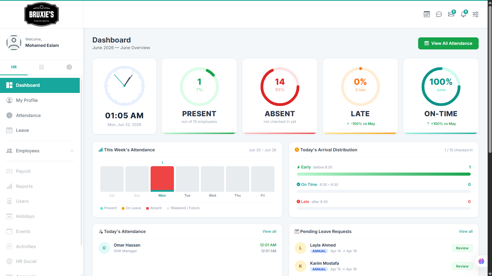

Building the digital operations foundation for Lake Plaza Enterprise Square, including online presence, business directory structure, domain and VPS setup, business email setup, workflow organization, and replacement workflows for attendance and leave tracking.

Lake Plaza Enterprise Square needed a simple digital presence that explains the place, presents the businesses inside it, and makes contact information easier to find. The project also included the operational side behind the website, such as domain setup, hosting, business emails, workflow planning, and internal system replacement needs.
The business square needed more than a basic landing page. It needed a clean online presence, organized information about tenants and brands, reliable contact channels, and a more structured way to manage digital operations instead of depending on scattered manual follow-up.
I worked on the digital setup and operational planning, covering website structure, content organization, technical setup, hosting/VPS considerations, business email setup, and workflow planning for internal processes.
I planned and started building a practical digital operations system around the website. The website acts as the public layer, while the supporting setup helps the business square organize contacts, tenant information, workflows, and internal operations more clearly.
This project shows my ability to work beyond dashboards and support the full digital layer of a business: website planning, information architecture, hosting setup, business communication, and internal workflow organization.